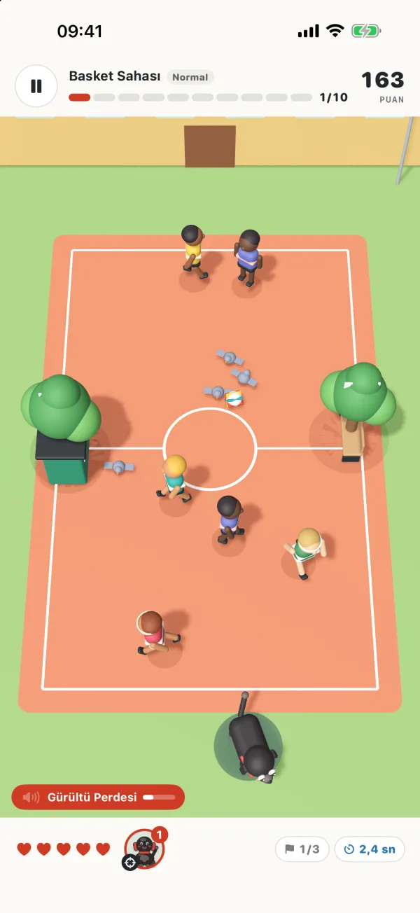
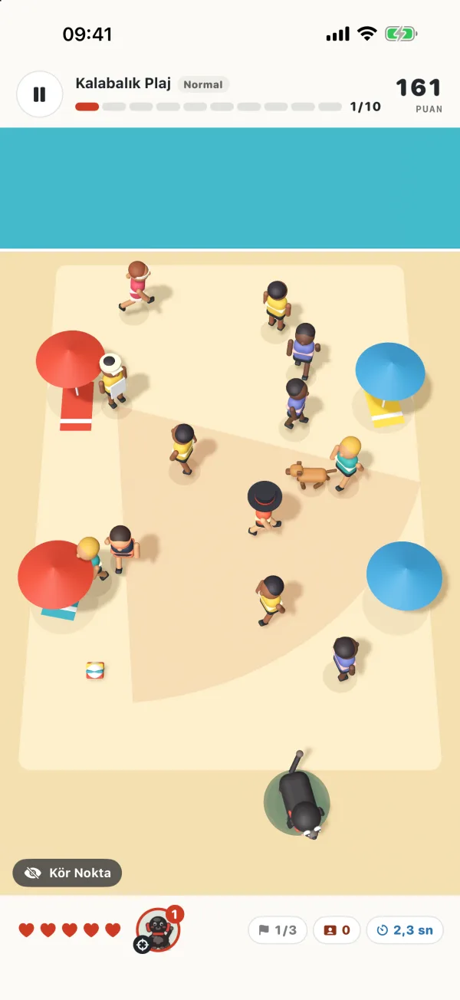
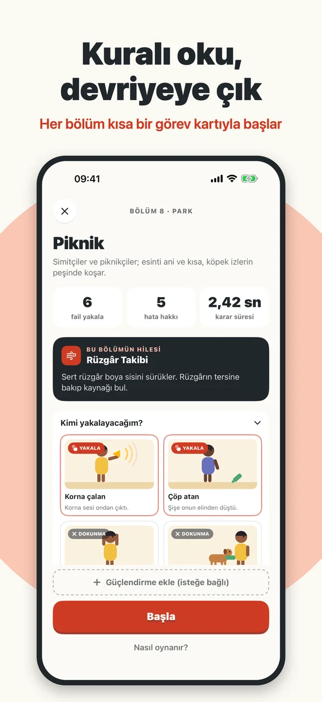
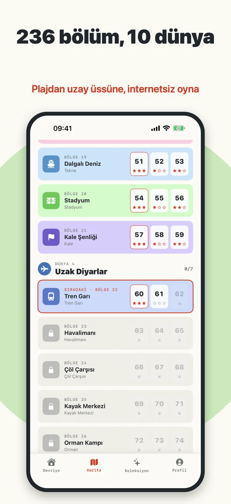
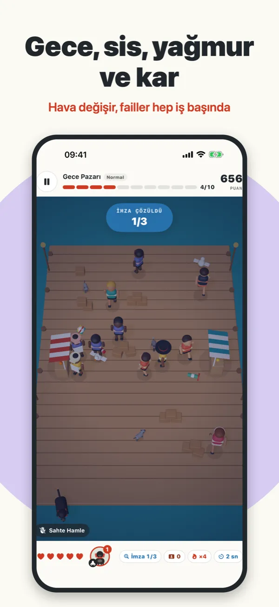
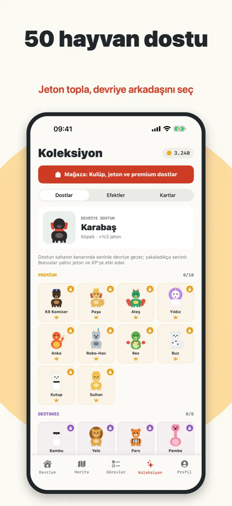

OYUN · iPHONE · 3D
SUÇÜSTÜ!
Gaz salanı, çöp atanı yakala!
Kalabalığın içinde biri gizlice gaz salıyor, biri yere çöp atıyor. Bulut rüzgârla kayar, köpek şişeyi kapıp başkasına götürür; kanıt yer değiştirir ama sahibi değişmez. Oyuncak görünümlü 3D dünyalarda faili gör, parmağınla dokun, suçüstü yakala.
Sürüm 1.2 TestFlight'ta. Henüz App Store'da değil; yayımlandığında indirme bağlantısı burada olacak.
01 · NASIL OYNANIR
Tek dokunuş, bol kahkaha
FAİLE DOKUN
Bulut kimin arkasından çıktıysa, şişe kimin elinden düştüyse o. Masuma dokunmak puan kaybettirir; karar süren her bölümün kartında yazar.
HER BÖLÜMÜN OYUNU
Gürültü gaz sesini bastırır, bekçi etrafı tarar, ikizler sessizce osurur. 12 farklı kural; komşu bölümler hiç aynı oynanmaz.
DOSTLARIN YETENEKLERİ
Her hayvan dostun bir yeteneği var: koklar, zamanı yavaşlatır, kalkan olur. Birlikte yakaladıkça bağınız güçlenir.
GİDEREK ZORLAŞIR
Sahalar büyür, kalabalık artar, karar süresi kısalır. Çaylak, Normal, Zor ve Efsane kademelerinin yıldızları ayrı.
BİR ŞANS DAHA
Beş fail kaçınca ikinci şans; yine olmazsa kaldığın aşamadan devam. Günün devriyesi ve sonsuz dalgalar her gün yeni.
GERÇEK SESLER
Altı çeşit sentezlenmiş osuruk sesi ve osuruk notalarıyla çalan neşeli bando müziği. Hepsi kayıt değil, kodla üretiliyor.
02 · BÖLÜM OYUNLARI
Her bölümün kendi oyunu var
Eğitim bölümlerinden sonra her bölüm aşağıdaki kurallardan biriyle gelir; kuralı başlamadan önce bölüm kartında okursun.
Gürültü Perdesi
Gürültü yükselince gaz sesi duyulmaz. Bulutu ve burnunu tutanları izle.
Koku İzi
Fail gazı bırakıp yürümeye devam eder. Koku izinin başladığı kişiyi yakala.
Sahte Hamle
Bazıları atacakmış gibi yapıp vazgeçer. Elinden bir şey çıkmadan dokunma.
Masum Köpek
Köpek hep yanlış kişiye havlar. Ona değil, kokunun kaynağına bak.
Kör Nokta
Bekçi etrafı tarıyor. Failler hep onun görmediği yerde iş çevirir.
Kapalı Kutu
Koku içeride birikir ve kapı açılınca herkes yer değiştirir.
Kesişen Kalabalık
İki kalabalık birbirinin içinden geçer. Faili kalabalıkta kaybetme.
Yer Değiştirme
Fail hemen uzaklaşır, yerine masum biri gelir. Bulutun yanındakine aldanma.
Önce Delil
Fail hiçbir işaret vermez. Önce delili gör, sonra sahibini bul.
İkizler
Tıpatıp aynı kıyafetler ve sessiz gazlar. Gözünü dört aç.
Sarsıntılı Yol
Her sarsıntıda herkes sendeler, biri de boşuna burnunu tutar.
Rüzgâr Takibi
Sert rüzgâr bulutu sürükler. Rüzgârın tersine bakıp kaynağı bul.
03 · DOSTLAR
50 hayvan dostu, 5 yetenek
Dostun devriyede yanında yürür ve yeteneğini kullanmana izin verir. Her devriyede nadirliğine göre 1–3 şarj; bağ seviyesi yükseldikçe yetenek güçlenir ve şarj artar.
Koku Alma
Köpekler faili koklar ve kısa süre gösterir.
Ağır Çekim
Kediler dünyayı birkaç saniye yavaşlatır.
Kalkan
İri dostlar kaçan bir faili affettirir.
Gözcü
Kuşlar bir süre suç işleyenlerin başına ünlem koyar.
Jeton Mıknatısı
Kemirgenler sonraki yakalamalara ekstra jeton getirir.
04 · DÜNYALAR
Mahalle'den Efsaneler Ligi'ne
- Mahalle
- Şehir Turu
- Festival Mevsimi
- Uzak Diyarlar
- Fırtına ve Gece
- Hayvanat Kaosu
- Dört Mevsim
- Büyük Kalabalık
- Uzay ve Ötesi
- Efsaneler Ligi
70 bölge, 206 ana bölüm ve 30 özel bölüm. Yağmur, kar, sis ve gece devriyeleri; bölge finallerinde siyah şapkalı aranan elebaşı.
05 · EKRANLAR
Tanıtım ve kareler






06 · YAPIM NOTLARI
Nasıl yapıldı?
Oyun ilk önce SpriteKit ile iki boyutlu, kuş bakışı bir deniz oyunu olarak doğdu. Sonra aynı fikri RealityKit ile üç boyuta taşıdım: kişiler, çöpler ve toplar gerçek fizikle hareket ediyor; gaz bulutunun görüntüsü ile oyunu belirleyen koku alanı birbirinden ayrı. Köpek kokuyu izliyor, kedi köpekten kaçıyor, güvercin seste havalanıyor. Sesler kayıt değil, programla üretiliyor; her ses türünün altı çeşidi var, aynısı art arda çalmıyor.
Geliştirici: Ali Emre Büyükkol.
07 · DESTEK
Yardım ve gizlilik
Giriş gerekmez; ilerlemen ve ayarların cihazında kalır. Oyunda Google AdMob (ve AdMob üzerinden Yandex) reklamları var: ilk üç bölümde reklam çıkmaz, açılışta reklam izni sorulur, uygulama izleme izni istenmez. Tek seferlik "Reklamları kaldır" satın alması reklamları kalıcı olarak kapatır.